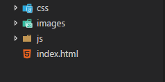

相信大家对vue.js这个前端框架有了一定的了解。想必也想把Vue急切的运用在项目中，看看它的魅力到底有多大？别急，今天我会满足大家的想法。
我们一起来看看“Webpack+Vue”的开发模式相比以往老项目(Gulp+jQuery)的开发模式的魅力在哪里。
一、配置开发环境
1、先安装Node和Webpack
2、建立一个文件夹为:Vue-project，然后初始化生成package.json。运行以下指令:
npm init初始化完成后，添加项目开发所依赖的包
"dependencies": {
"vue": "^2.2.2",
"vue-router": "^2.3.0",
"vue-template-compiler": "^2.2.2"
},
"devDependencies": {
"axios": "^0.15.3",
"babel": "^6.3.13",
"babel-core": "^6.3.21",
"babel-loader": "^6.2.0",
"babel-plugin-component": "^0.4.1",
"babel-preset-es2015": "^6.3.13",
"babel-preset-stage-2": "^6.22.0",
"babel-runtime": "^5.8.34",
"clean-webpack-plugin": "^0.1.9",
"cross-env": "^1.0.6",
"css-loader": "^0.16.0",
"extract-text-webpack-plugin": "^1.0.1",
"file-loader": "^0.8.5",
"html-webpack-plugin": "^2.17.0",
"moment": "^2.15.1",
"node-sass": "^4.5.0",
"sass-loader": "^3.2.3",
"style-loader": "^0.12.3",
"url-loader": "^0.5.6",
"vue-loader": "^11.1.4",
"vue-hot-reload-api": "^2.0.6",
"webpack": "^1.12.0",
"webpack-dev-server": "^1.14.0"
}3、安装所需模块，运行指令
npm install
注：可能由于网络原因，导致某些包不能下载成功。别担心，我们可以尝试把npm的镜像地址切换成淘宝镜像。运行如下指令:
npm install -g cnpm --registry=https://registry.npm.taobao.org安装指令跟npm一样，只不过前面需要添加一个c。
比如：cnpm install xxxx
二、搭建项目结构
可能在我们以前开发一个项目，所搭建的项目结构如下图所示:

可是现在的项目基本都是基于前端工程化的，包括的东西也很多(前端路由、包管理、配置文件...)。很显然，从最开始按照单一资源分类，来划分目录结构是不可行的。 于是，又得改造项目目录结构。可能是这样的 (仅供参考)
俗话说的好:“工欲善其事必先利其器”。一个合理的项目结构，能体现各模块的职责与分工，减少成员间的沟通成本，更好的管理项目。
三、正式开发
好了，可能有人会说，你前面扯了很多废话。都还没谈如何开发呢? 别急大兄弟，心急可吃不了热豆腐，得慢慢来!
运行我们之前添加好的指令
npm run dev访问
http://localhost:8188
不出意外，你会看到如下图一样:
那么恭喜你，一个Vue+Webpack的初始化项目已经完成了。不妨赶紧修改下文件:
1、看是否能实现热加载。
2、父组件传递数据到子组件,子组件能否收到。
3、ajax能否正常运行 注:(ajax模块看下图)
....
于是，我们很愉快的把项目开发完成。那么怎么把项目上线呢?
可以运行以下打包命令
npm run build打包成功后，就行生成一个dist文件夹。然后把这个文件夹放到后端的web容器里面就行了。
看完文章后，可能有些朋友会有一些疑问:
1、前端页面之前跳转是如何是实现的？
答：因为Vue提供了一款叫路由的工具Vue-Router，页面的切换于跳转就是靠它实现的。
2、组件间的数据传递，跨组件通信有什么方法呢？或者说几个组件同时共享一份数据!
答：虽然官方提供了事件总线来解决，但我个人建议你可以用Vuex(全局状态管理)来解决。
3、除了用你的项目脚手架(初始化)，还有其它的脚手架可以直接生成项目吗？
答：官方提供了Vue-cli的工具，也可以帮你完成项目初始化工作。
写在最后：Vue+webapck的这种开发模式，相对于老项目。我觉得在最大的好处在于:
1、提升了我们的开发效率(通过webpack可以实现组件按需加载、静态资源打包合并压缩...)
2、组件化友好(任何一个组件都是一个独立的模块,互不影响)
Vue是一个渐进式的框架，你可以把它当成简简单单的模板使用。也可以用作SPA(单页面应用)，进行前后端分离开发。
还犹豫什么啊，赶紧上车啊!
本文出处:http://www.234music.cn/